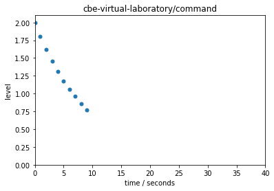

Accessing a Remote Experiment via MQTT
Contents
Accessing a Remote Experiment via MQTT¶
Installations¶
!pip install paho-mqtt
Requirement already satisfied: paho-mqtt in /Users/jeff/opt/anaconda3/lib/python3.7/site-packages (1.5.1)
Remote Operation of a Laboratory Experiment¶
This cell establishes a connection to two topics on an MQTT server. The ‘command’ channel is used to publish a message to start a remote experiment for a duration given in seconds. A client is opened to listen to a ‘measurement’ channel.
Before running this channel, start up up the companion notebook that simulates a remote experiment https://colab.research.google.com/drive/1cj9Y8IlVX2-ZMEMoVWi8G5WDKNr3gkr9?usp=sharing
%matplotlib inline
import paho.mqtt.client as mqtt
import paho.mqtt.publish as publish
import time
import matplotlib.pyplot as plt
import numpy as np
from IPython import display
import json
import uuid
# configuration
duration = 10
# set up client to interact with cbe-virtual-laboratory
class CBEClient(mqtt.Client):
def __init__(self, recv="", send=""):
super().__init__()
self.host = "mqtt.eclipse.org"
self.recv = recv
self.send = send
def on_connect(self, client, userdata, flags, rc):
print(f"Connected: {self.host} with return code {rc}")
if self.recv:
self.subscribe(self.recv, qos=2)
print(f"Subscribed: {self.recv}")
def on_message(self, client, userdata, msg):
payload = json.loads(msg.payload.decode("utf-8"))
print(f"Receieved: {payload} from {self.recv}")
def connect(self):
super().connect(host=self.host, port=1883, keepalive=60)
def publish(self, payload):
if self.send:
super().publish(self.send, payload=payload)
print(f"Sent: {payload} to {self.send}")
else:
print("No send topic has been specified.")
def __enter__(self):
self.connect()
self.loop_start()
time.sleep(0.5)
print(f"Loop Started: {self}")
return self
def __exit__(self, exc_type, exc_value, exc_traceback):
self.loop_stop()
print(f"Loop Stopped: {self}")
# listen for response
with CBEClient(send="cbe-virtual-laboratory/command") as cbe:
payload = {
"client_id" : str(uuid.getnode()),
"duration" : duration
}
cbe.publish(json.dumps(payload))
with CBEClient(recv="/".join(["cbe-virtual-laboratory", payload["client_id"]])) as expt:
time.sleep(duration)
Connected: mqtt.eclipse.org with return code 0
Loop Started: <__main__.CBEClient object at 0x7ffb0c31fc50>
Sent: {"client_id": "64844672765268", "duration": 10} to cbe-virtual-laboratory/command
Connected: mqtt.eclipse.org with return code 0
Subscribed: cbe-virtual-laboratory/64844672765268
Loop Started: <__main__.CBEClient object at 0x7ffb0c2ef510>
Receieved: {'time': 0, 'x': 0, 'y': 0} from cbe-virtual-laboratory/64844672765268
Receieved: {'time': 1, 'x': 0, 'y': 0} from cbe-virtual-laboratory/64844672765268
Receieved: {'time': 2, 'x': 0, 'y': 0} from cbe-virtual-laboratory/64844672765268
Receieved: {'time': 3, 'x': 0, 'y': 0} from cbe-virtual-laboratory/64844672765268
Receieved: {'time': 4, 'x': 0, 'y': 0} from cbe-virtual-laboratory/64844672765268
Receieved: {'time': 5, 'x': 0, 'y': 0} from cbe-virtual-laboratory/64844672765268
Receieved: {'time': 6, 'x': 0, 'y': 0} from cbe-virtual-laboratory/64844672765268
Receieved: {'time': 7, 'x': 0, 'y': 0} from cbe-virtual-laboratory/64844672765268
Receieved: {'time': 8, 'x': 0, 'y': 0} from cbe-virtual-laboratory/64844672765268
Receieved: {'time': 9, 'x': 0, 'y': 0} from cbe-virtual-laboratory/64844672765268
Loop Stopped: <__main__.CBEClient object at 0x7ffb0c2ef510>
Loop Stopped: <__main__.CBEClient object at 0x7ffb0c31fc50>
Version 1¶
%matplotlib inline
import paho.mqtt.client as mqtt
import paho.mqtt.publish as publish
import time
import matplotlib.pyplot as plt
import numpy as np
from IPython import display
# select experiment duration
duration = 10
topic = "cbe-virtual-laboratory/command"
# setup a plotting window
x = []
y = []
fig, ax = plt.subplots(1, 1)
ax.plot(x, y, '.', ms=10)
ax.set_xlim(0, 40)
ax.set_ylim(0, 2.1)
ax.set_xlabel('time / seconds')
ax.set_ylabel('level')
ax.set_title(topic)
line = ax.lines[0]
display.display(fig)
# callbacks
def on_connect(client, userdata, flags, rc):
print(f"Connected with result code {rc}")
client.subscribe("cbe-virtual-laboratory/expt")
# call back to process message from remote experiment
def on_message(client, userdata, msg):
#print(msg.topic + " " + msg.payload.decode("utf-8"))
xdata, ydata = [float(i) for i in msg.payload.decode("utf-8").split(',')]
x.append(xdata)
y.append(ydata)
line.set_data(x, y)
display.clear_output(wait=True)
display.display(fig)
# setup client
client = mqtt.Client()
client.on_connect = on_connect
client.on_message = on_message
# connect to measurement channel
client.connect("mqtt.eclipse.org", 1883, 60)
# tell experiment to start
msg = f'{{"duration": {duration}}}'
publish.single("cbe-virtual-laboratory/command", msg, hostname="mqtt.eclipse.org")
# listen for measurement information
client.loop_start()
time.sleep(duration)
client.loop_stop()
# prevent the plot showing again after completion
plt.close()
